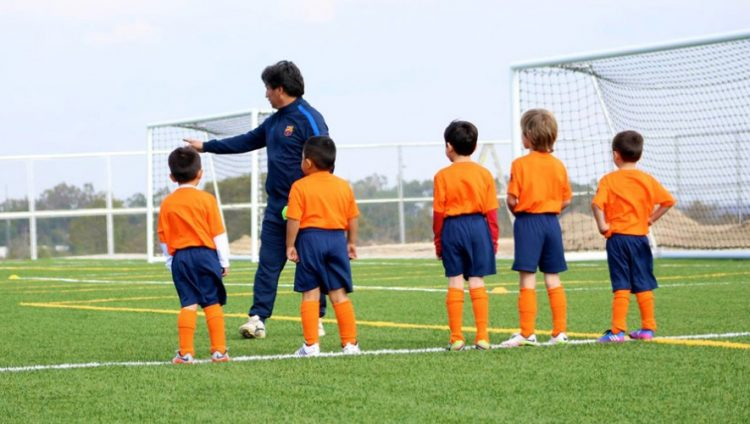
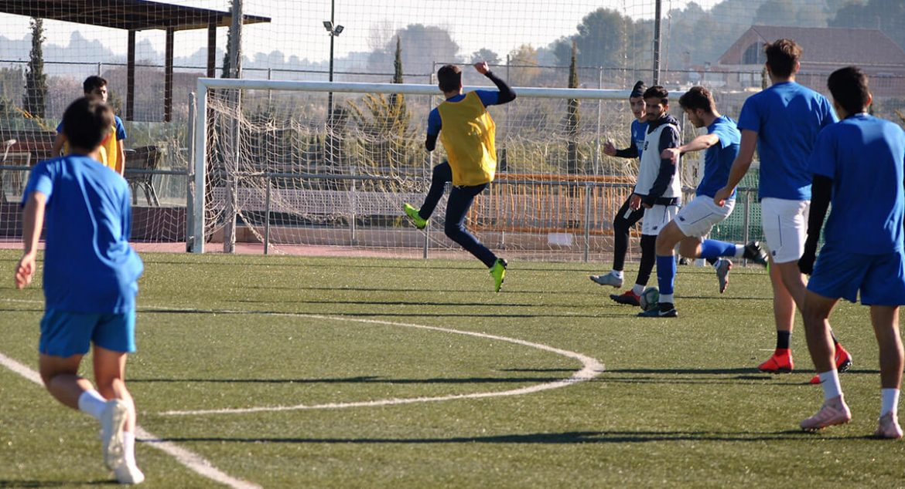

“Ayudamos a los jóvenes a ser mejores futbolistas y mejores personas”
Esta escuela de fútbol se encuentra en La Paz, Bolivia, y es una academia profesional de alto rendimiento con muchos años de recorrido. Su misión es conseguir que los jugadores alcancen sus aspiraciones deportivas y académicas, y para conseguirlo, la academia les proporciona el mejor entorno y los mejores profesionales para que vivan una experiencia lo más parecida posible a la rutina que sigue un futbolista profesional.
 